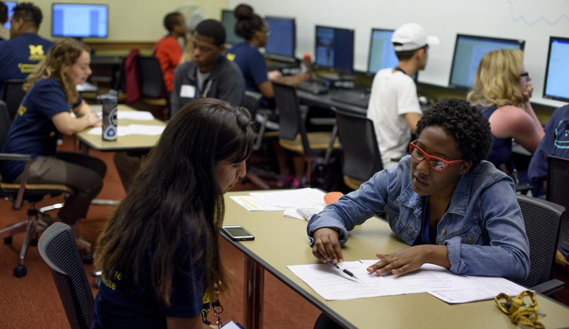

At the University of Michigan School of Information (UMSI), we are committed to supporting our students' academic success by offering a wide array of resources and services. Our academic advising team provides personalized guidance to help you navigate your curriculum, select courses, and address any academic challenges or questions you may encounter during your studies. UMSI students also have access to the extensive collections and study spaces within the University Library system, offering both digital and physical resources essential for research and coursework. Additionally, our specialized tutoring services and the UMSI Writing Center are available to support you in mastering complex subjects and enhancing your written communication skills. By utilizing these academic resources, UMSI students can thrive in their studies and achieve their educational goals.
Academic Resources
At the Univeristy of Michigan School of Information, we provide several resources to help students acheive academic sucess. Stuff like tutoring, one and one sessions, and accomidations for disabilites are all available to meet any student's needs.
Additional Resources
There are also other resources to help with other, more diverse needs and problems of the students at this university. Deans are able to answer any academic or scheduling questions the student may have and the international center is ready to help international student with anything.
Emergency and Supportive Contact
The Univeristy of Michigan also maintains emergency services for health and saftey incase ant students that are in need of such services. These services range from physical and mental to on demand saftey requests.
- UM Division of Public Safety (DPS) Phone Number: 734-764-1131
- UM Counseling & Psychological Services (CAPS) Phone Number: 734-764-8312
- UM Counseling & Psychological Services (CAPS) Phone Number: 734-764-8312
- UM Hospital Psychiatric Emergency Room Phone Number: 734-996-4747
- UM Sexual Assault Prevention and Awareness Center Phone Number: 734-936-3333
- SafeRide Late Night Transportation Phone Number: 734-647-8000
- Emergency Services Phone Number: 911